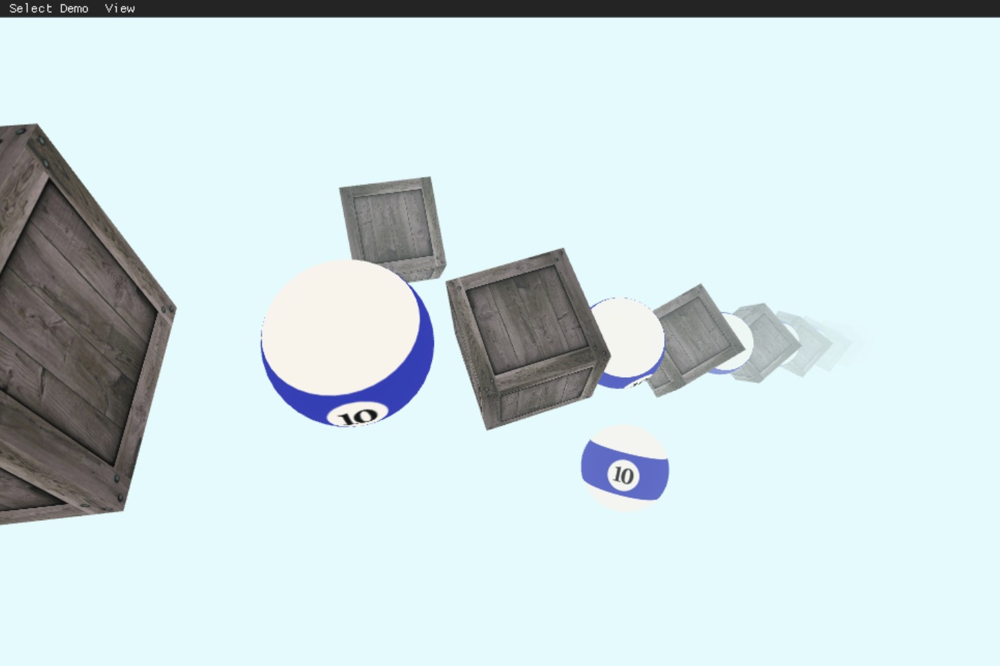
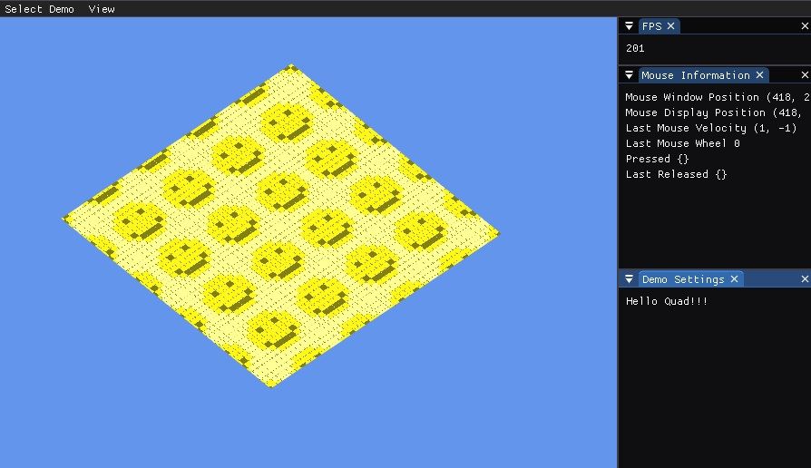
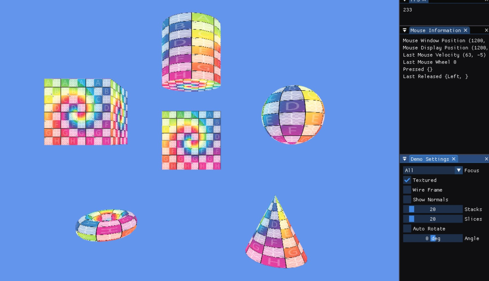
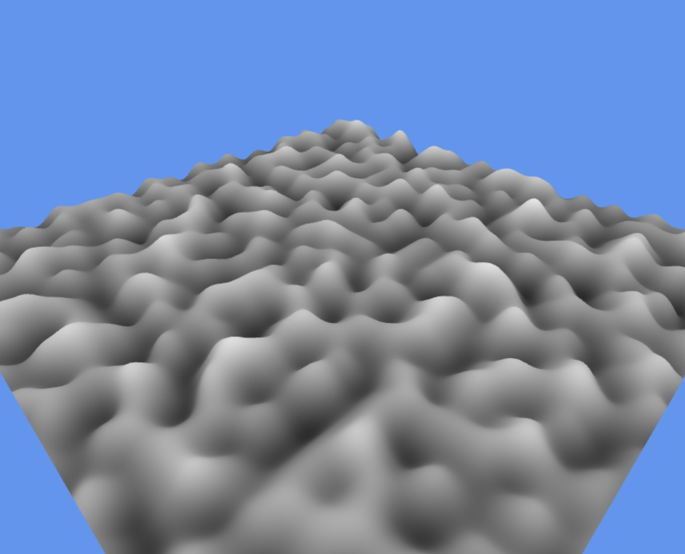
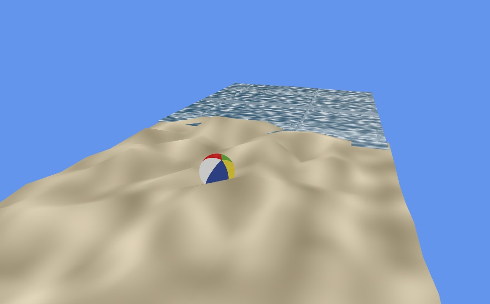
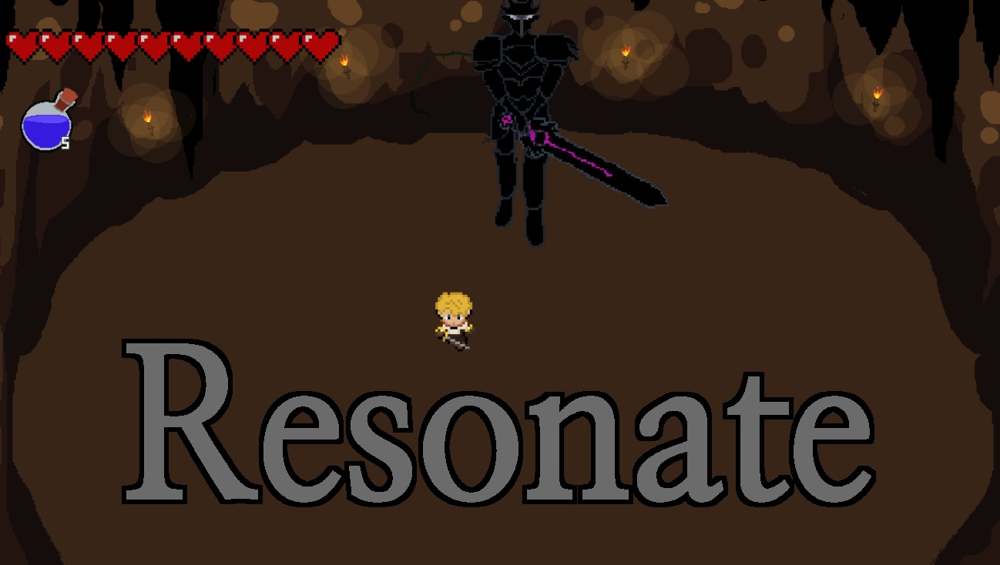

V2X-Based Cooperative Driving System
Cooperative decision-making and MPC path tracking for multi-agent autonomous driving.
Excellence Award
View Details
Perception, planning, control, and sim-to-real field deployment.
Cooperative decision-making and MPC path tracking for multi-agent autonomous driving.

Vision-based lane, traffic light, pedestrian, and delivery-sign perception pipeline.

Compact vehicle autonomy stack for path following and traffic-light-aware mission logic.

Lane following and mission-state logic tested in a virtual driving environment.
Rendering foundations, shader effects, procedural geometry, and WebGL demos.

Reusable OpenGL abstractions and shader-driven interaction across native and web builds.

Generated mesh primitives and index buffers for interactive OpenGL rendering demos.
Implemented linear, exponential, and depth-based fog models in GLSL.
Built ramp-based lighting, specular shaping, normal transforms, and fog integration.
Two-pass shadow rendering with depth textures, framebuffer support, and camera transforms.
Generated 1D, 2D, and 3D procedural textures with CPU-side noise functions.

Implemented gradient noise and procedural patterns including marble, wood, and turbulence.

Beach scene combining procedural geometry, noise terrain, lighting, and real-time controls.
Visual recognition and retrieval projects that connect model design with practical object search.
Model-assisted visual search pipeline for identifying Lego pieces or sets from images.
Playable loops, gameplay systems, state flow, and team production practices.
Long-form team game project with production-style gameplay and engine integration.
Complete playable loop with responsive controls, feedback, and stable state transitions.

Early team game project focused on scope control, player feedback, and delivery.
Real-time perception and control systems for autonomous vehicles
Completed
Developed a V2X-based autonomous driving system for the KAIST Mobility Challenge Competition. Designed robust decision-making algorithms for safe intersection navigation and dynamic overtaking maneuvers.
Developed a vision-based autonomous driving system for a 1/2-scale vehicle to navigate complex obstacle courses. Led the development of robust perception algorithms for lane tracking, object detection, and mission-critical decision making.
Completed
Built a compact autonomous-driving stack for a 1/5-scale vehicle, focusing on lane-aware path following, mission-state logic, and reliable behavior under competition constraints.
Completed
Developed and tested autonomous-driving behaviors in simulation, including lane following, mission handling, and scenario-specific decision logic for virtual road environments.
Real-time rendering, simulations, and visual effects
Established a foundational rendering pipeline by implementing core OpenGL abstractions. Developed an interactive animated quad capable of running seamlessly on both Windows and Web platforms.
Implemented procedural mesh generation algorithms and seamlessly integrated the generated meshes into an interactive graphics demo.
Implemented various atmospheric fog rendering techniques directly within shaders and integrated them into the interactive graphics pipeline.
Completed
Explored non-photorealistic rendering by implementing different toon shading techniques, managing normal transformations, and integrating linear fog effects.
Completed
Implemented robust shadow mapping techniques using a two-pass rendering approach and integrated them effectively into an interactive 3D environment.
Completed
Implemented a CPU-side Value Noise algorithm in C++ to generate procedural textures and visualized the output dynamically via OpenGL shaders.
Extended the graphics framework to support advanced texture formats and implemented a 3D Gradient Noise algorithm utilizing a 2D texture lookup approach.
Designed and developed an interactive 3D beach scene to demonstrate various graphics techniques and rendering pipelines learned throughout the course within a single cohesive environment.
Visual recognition and retrieval systems built around practical object search
Computer vision project for building a model-assisted visual search workflow that helps identify Lego pieces or sets from images.
Interactive experiences built with Unity and custom engines
Long-form team game project focused on production-style gameplay systems, engine integration, rendering support, and maintainable collaboration over a multi-semester development cycle.
C++ game project centered on a complete playable loop, responsive input, readable feedback, and stable state transitions across gameplay, pause, restart, and end states.
Early team game project that established my foundation in C++ gameplay programming, scope control, player feedback, and complete-loop delivery.